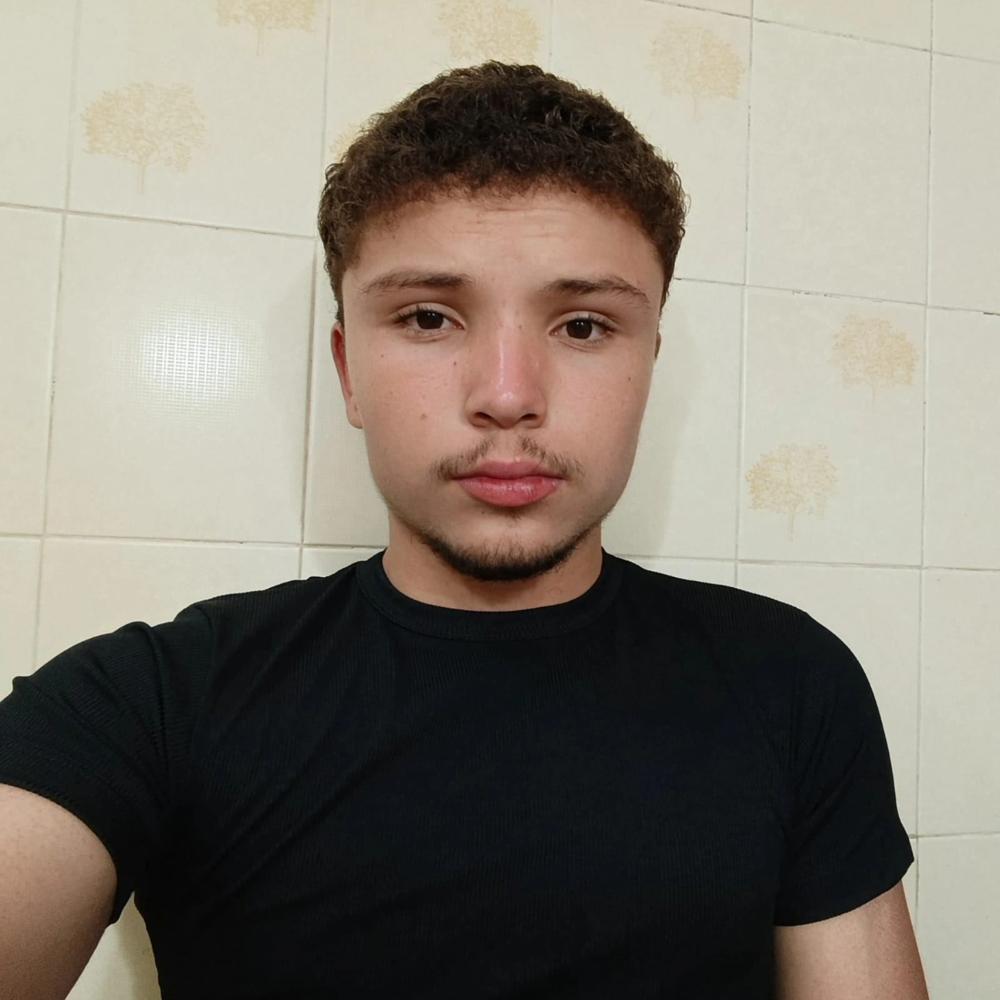
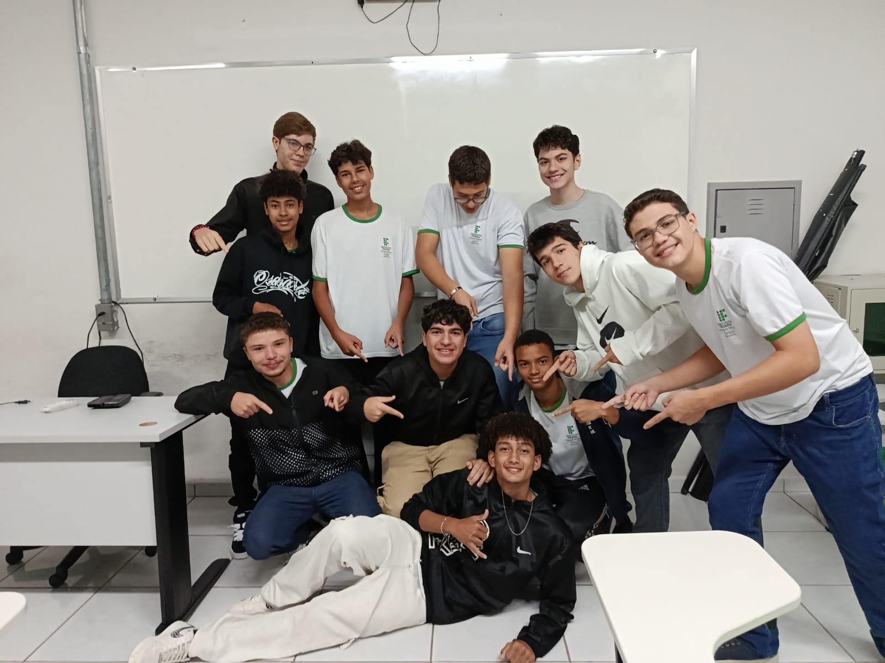

Davi Salles é um jovem de 17 anos, natural e residente em Patrocínio, Minas Gerais. Atualmente, ele está cursando o segundo ano do Ensino Médio Integrado ao curso técnico de Informática no Instituto Federal do Triângulo Mineiro (IFTM). Sua trajetória é marcada por uma profunda curiosidade intelectual e uma dedicação multifacetada aos seus interesses, que vão desde as ciências humanas e a tecnologia até o esporte.
Ele destaca-se por sua forte inclinação para as ciências humanas, com grande interesse por história, geografia e ciências sociais. Seus planos futuros incluem a busca por graduações nas áreas de Economia ou Ciência Política em instituições federais, como a UFMG ou a UFU.
Entre suas realizações, destaca-se o desenvolvimento de um projeto acadêmico de pesquisa focado no contexto socioeconômico e na infraestrutura de sua cidade natal, Patrocínio. Além disso, ele mantém um canal no YouTube dedicado à criação de visualizações de dados e infográficos sobre resultados eleitorais, combinando sua habilidade técnica com o seu interesse pelas ciências sociais.
O lado pessoal é marcado por laços fortes e amizades duradouras. Davi tem uma relação próxima com sua mãe, que o apoia em suas decisões de carreira, e mantém o hábito de passar períodos no apartamento de seu pai em Belo Horizonte. No ambiente escolar e social, possui um grupo de amigos de longa data composto por Pedro, Davi, Lucas, Bryan, Álvaro e Francisco, com quem compartilha interesses por jogos e cultura pop.
Página criada pelo aluno Davi Salles
Voltar